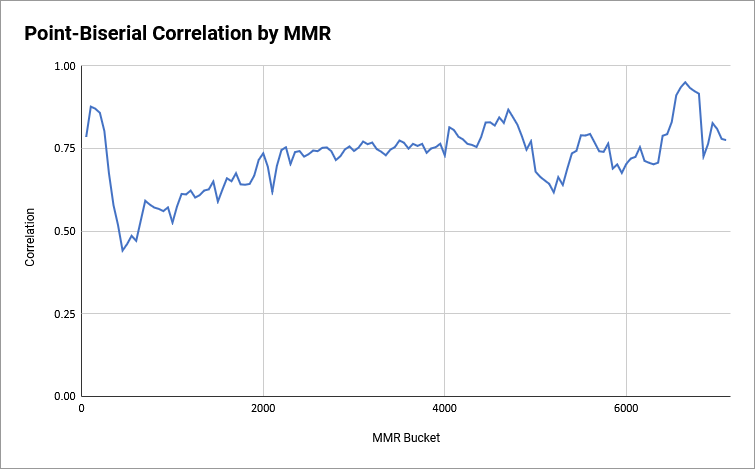

WWE UNDEFEATED
WWE Undefeated was a AA mobile fighting game featuring fast-paced PvP combat, customizable combos, and high-flying WWE action.

- Press Release: "nWay unveils WWEⓇ Undefeated...."
- WWE Trailer: "WWE Undefeated available now...."
- WWE Activation: DaParty Plays WWE UNDEFEATED!!!....
I was the Senior Systems Designer on this project from production through release. I designed most major meta systems and took over economy design after the Lead Systems Designer left during production.
- Role: Senior Systems Designer
- Platforms: iOS/Android
- Tools: Unity, Google Sheets/Docs, Snowflake, Amplitude
- Team size: 40+
Responsibilities
- Managed the growth of a mid-level systems designer
- Designed core F2P economy and systems such as matchmaking, progression, combat stats, etc.
- Planned quarterly content roadmap with discipline leads
Highlights
Product-Driven Design
During my onboarding I discovered that the team had ported systems from previous titles that they no longer understood. The original designers were long gone by this point, and the systems were considered "good enough" to not warrant investigation.
This didn't sit right with me. How could we understand the business impact of our systems without knowing their performance?
I set to work analyzing our live games and discovered that:
- Our MMR system had low predictive power at estimating fair matchups
- Our matchmaking was region-locked and players often failed to find matches
- Some of our environments and shaders were poorly optimized for certain device models
1. MMR Revamp
I determined that adjusting our existing MMR system wasn't going to move the needle. It needed to be fully replaced with something more robust. I proposed that we implement the Elo rating system and perform a one-time ratings adjustment to all players using historical win/loss data.
The outcome was a massive improvement in predictive accuracy. A pairwise correlation analysis showed that our implementation was ~75% accurate at predicting veteran player matchups, which is on par with ratings systems used in professional sports.
- The model is fairly accurate for D0 players since having played even just a few more matches than your opponent gives you a huge advantage in terms of game knowledge
- The model dips in accuracy up until ~2000 MMR due to the use of bots to artificially progress players through lower PvP leagues. We stopped matching those players against bots around that point in progression
Our implementation of Elo is slightly modified to include an 'inflation' parameter that artificially inflates new player progress. Here's a blog post I wrote explaining the design intent behind this implementation:
"Inflationary points help players climb the leaderboard at lower ranks. Engagement is rewarded since there's upwards MMR pressure regardless of whether you win or lose. This is particularly helpful for players who join late and need to quickly catch up to the competition. Past a certain MMR threshold this value will be set to 0, meaning that rank inflation ceases to exist and score calculation returns to being purely competitive."
2. Cross-Region Matchmaking
I led a system redesign that would allow players to match with each other cross-region so long as their respective pings were under a defined threshold. The system worked like this:
- Login
- You ping all of our region combat servers
- Your ping results get stored on your client
- Matchmaking
- Our matchmaker flags which regions you're eligible to matchmake for based on your ping results vs. a ping threshold (e.g., <=150ms)
- Our matchmaker searches against the subset of queued players whose eligible regions intersect with your eligible regions
- Our matchmaker finds you a match against a suitably skilled opponent
This system was highly successful at connecting players in low-population geos like Eastern Europe with players from other regions while still maintaining high match quality.
In some of these low-population regions over 95% of matches were played cross-region. This allowed us to retain these players for longer than if they'd had nobody to match against.
3. Asset Optimization
I met with our art leads and presented a high-level overview showing which environment assets had the worst device performance, as well as environments which underperformed on specific device models.
While I wasn't directly involved with the improvements, we were able to substantially increase client FPS across most device models. This let us raise our minimum spec requirements which in turn expanded our serviceable addressable market.